| 日付 | 2009年6月27日（土） - 2009年6月28日（日） | ||||
|---|---|---|---|---|---|
| 山域 | 日光周辺 | ||||
| メンバー | グループ（男5女2） | ||||
| 山行形態 | 1泊2日ホテル泊 | ||||
| アクセス | 車 | ||||
| ルート (Map2) |
|
2日目
6:20に宿を出発。
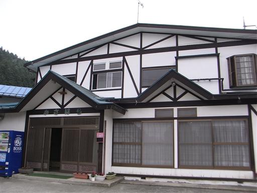
車で駐車場まで移動。ここからさらに送迎バスに乗って上のほうまで行く。
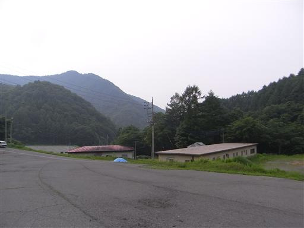
車窓からは武尊牧場が広がる。
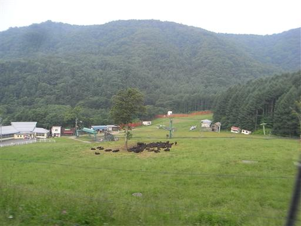
7:20 三合平を出発する。標高1480m。
あたりは巨木が多い原生林が広がっている。
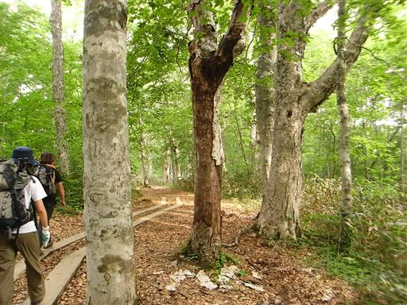
巨大化したミズバショウの葉。花の時期には少し遅すぎる。
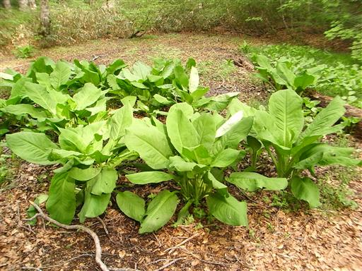
映画「眠る男」のロケ地という案内板が立っている。
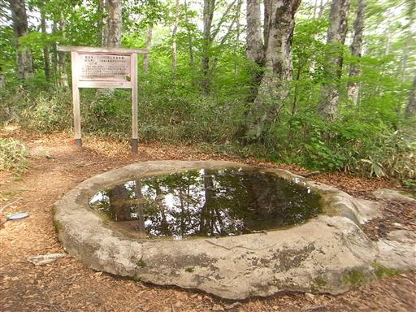
道端にはマイヅルソウがたくさん咲いている。
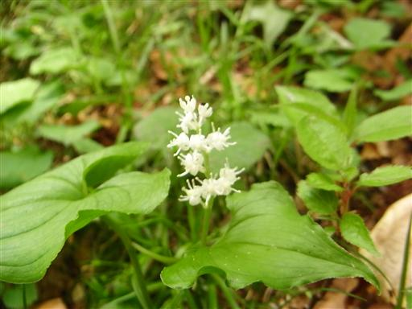
ズダヤクシュ。雑草のようで目立たない。
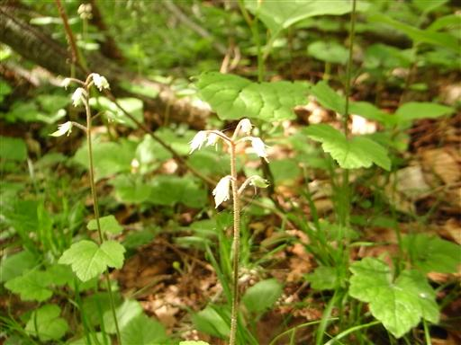
サンカヨウ。
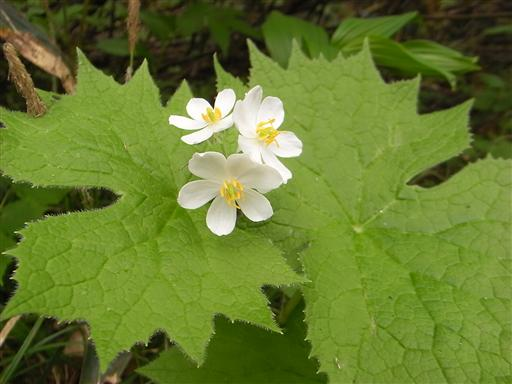
武尊避難小屋に到着。内部は結構荒廃していて、本当に避難時にしか使えなさそうだ。
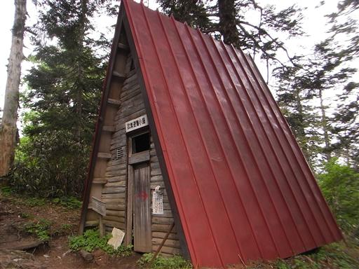
しばらく歩くと、樹林のあいだから武尊山の山頂が見えてきた。
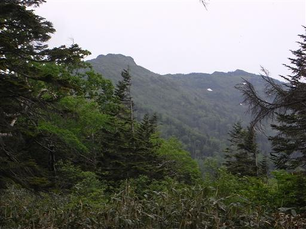
傾斜はゆるやかで歩きやすいが、登山道は泥に覆われている箇所がかなりある。
虫の数がかなり多くうっとうしい。
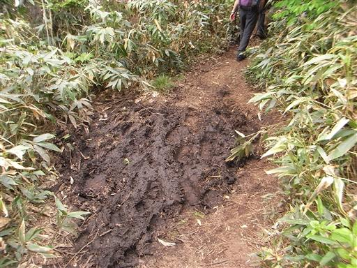
なだらかだった斜面を過ぎると、目の前に岩肌が露出した急斜面が現れる。
このコース唯一の難所だ。
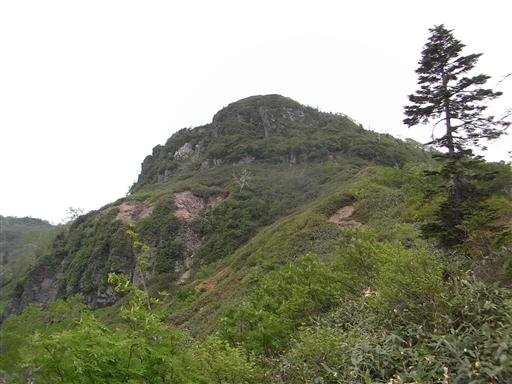
数箇所連続して鎖場がある。
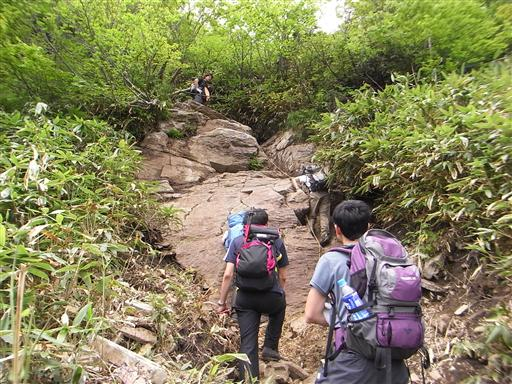
鎖場を過ぎると広い斜面に出てくる。
辺りはハイマツに覆われていて、完全に高山の景観だ。
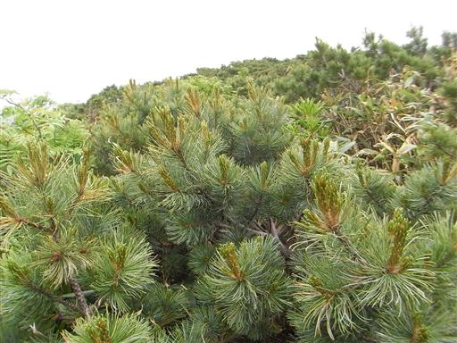
まだ残雪があちらこちらに残っている。
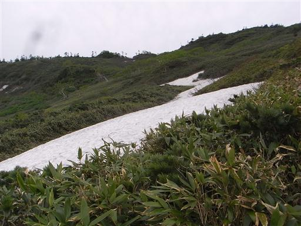
ベニサラサドウダンの花が咲いている。
サラサドウダンの赤色版で、こちらの花も非常にきれいだ。
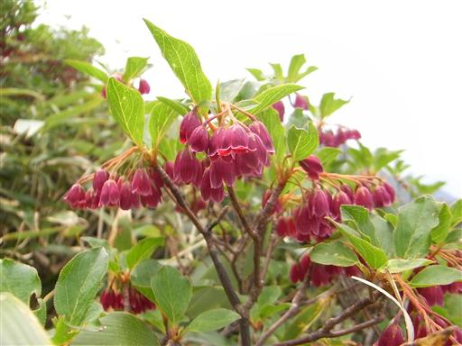
豊富に残る残雪を歩いて、先に見える山頂をめざす。
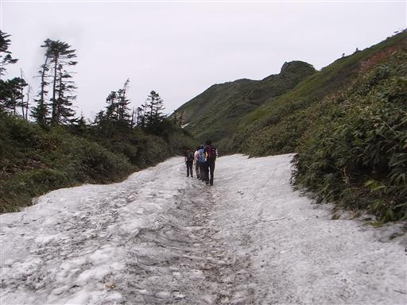
水場に到着。水量は少ないがおいしい水が流れている。
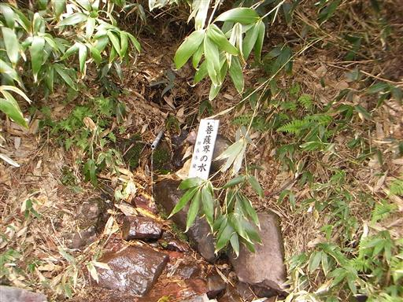
山頂直下には日本武尊の像が立てられている。
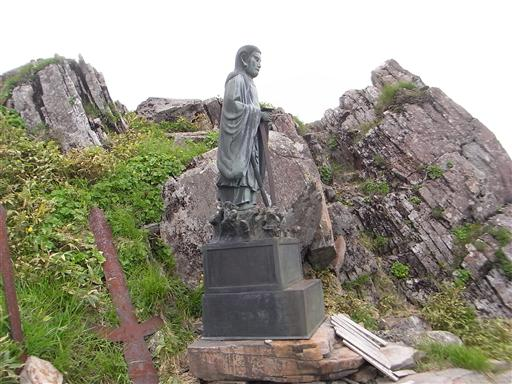
10:29 武尊山山頂到着。標高2158m。
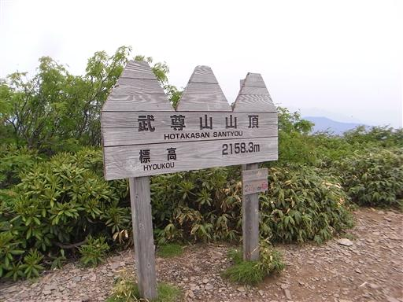
目の前には武尊山の一峰、剣ヶ峰山が見える。
360度武尊山の大きな裾野が見える。とにかくでかい山だ。
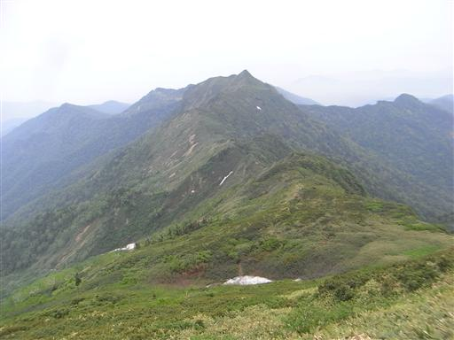
北の方には微かに谷川連峰が見えている。
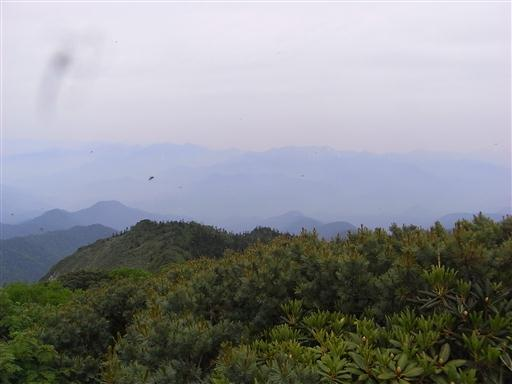
下山は往路を戻る。再びなだらかな尾根を下っていく。
天気は回復傾向らしく、遠くの山もだんだんとはっきり見えてくる。
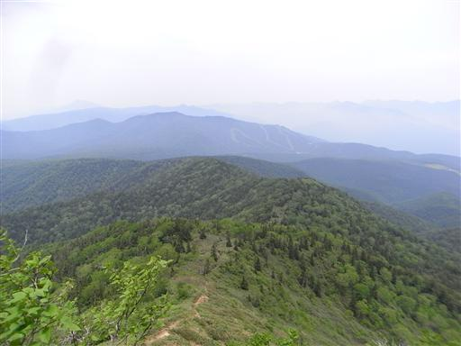
目の前に見える山は至仏山。尾瀬ヶ原から見る至仏山はとにかく美しいが、
ここから見る至仏山もなかなか存在感があって美しい。
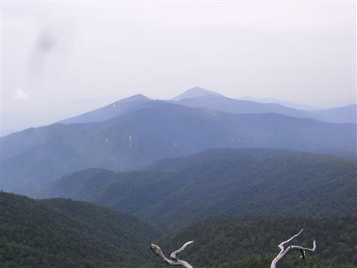
標高を落としていくと、再び付近は樹林帯に包まれる。
武尊山はスキー場などの開発がかなり進んでいるが、
ボリュームの大きな山なので、まだ自然もたくさん残っている。
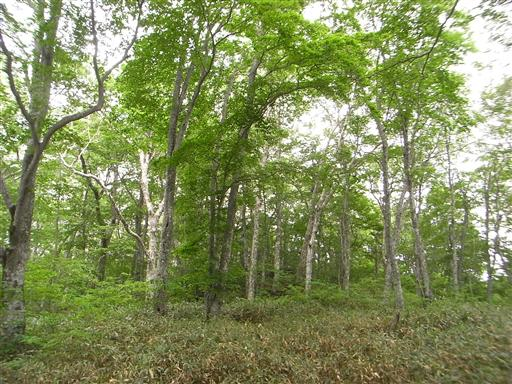
ヤマオダマキ。変わった形の花だ。
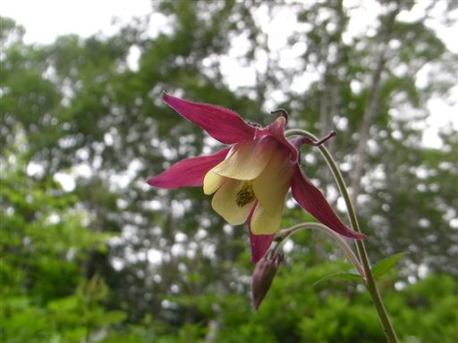
14:23 武尊牧場に下山。
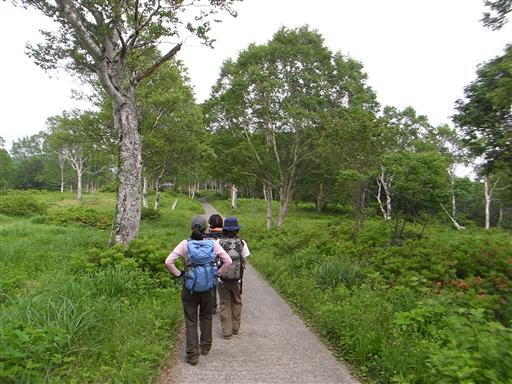
この辺りではレンゲツツジ祭りが開催中。
ほとんどのレンゲツツジはもう終わりかけているが、
まだきれいな花を付けている株も僅かに見られる。
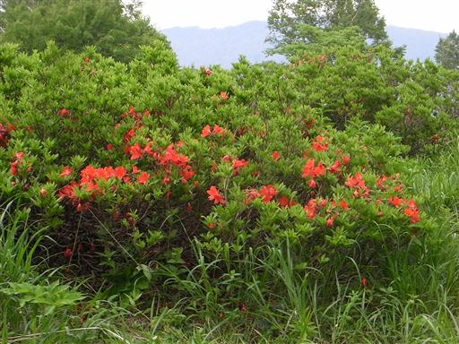
ベニバナイチヤクソウ。初めて見た花だが、この辺りに群生している。
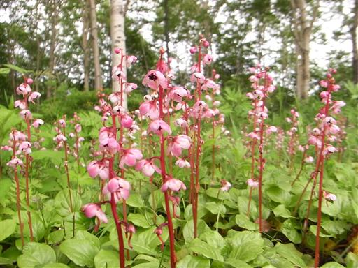
武尊牧場は観光地になっていて、観光客もちらほらいる。
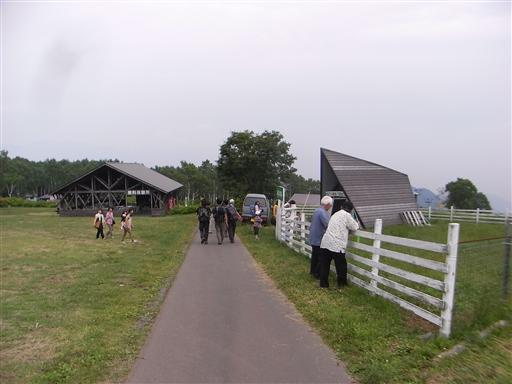
ルピナス。こちらは園芸品種。
植えたものがどんどん繁殖したらしい。
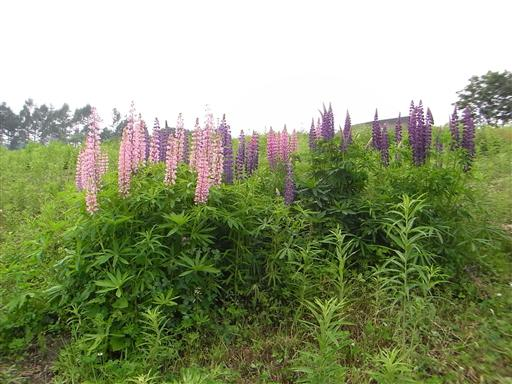
草原の中にヒメスイバの赤い花が広がっている。
帰りはリフトに乗って下山する。
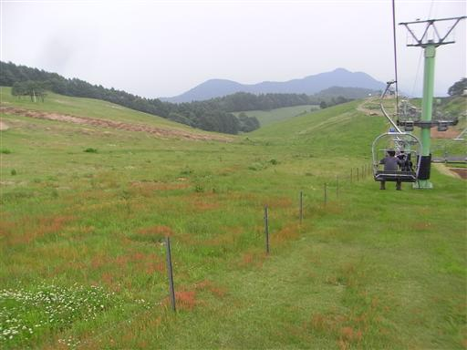